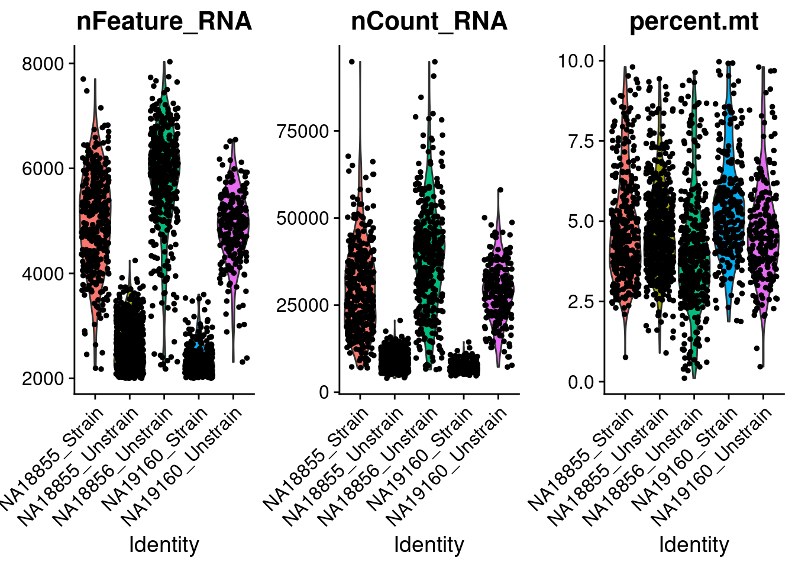
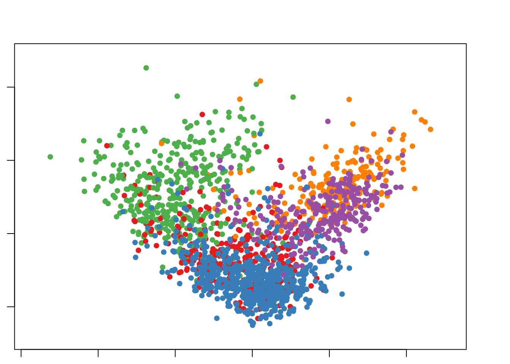
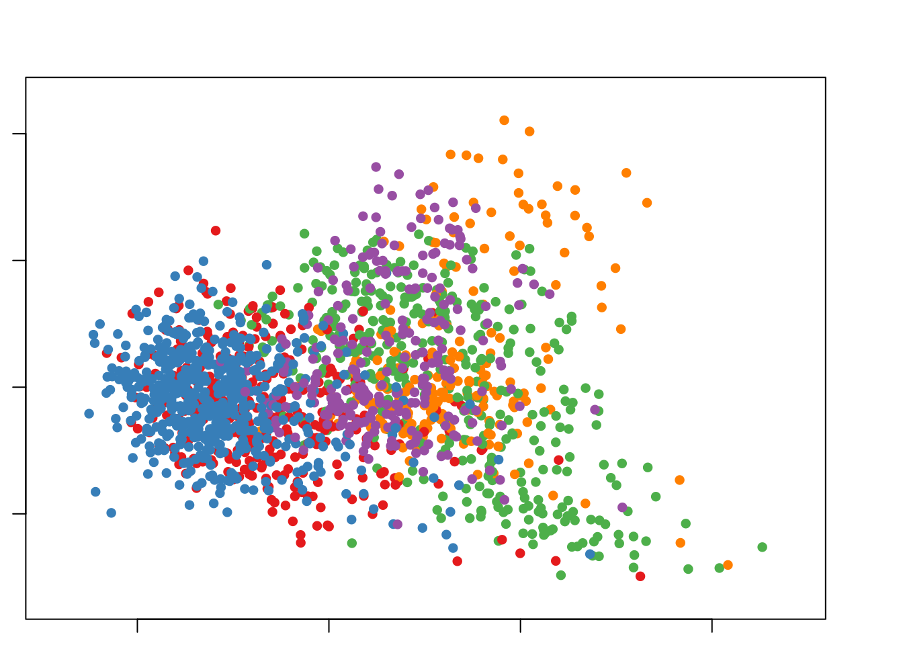
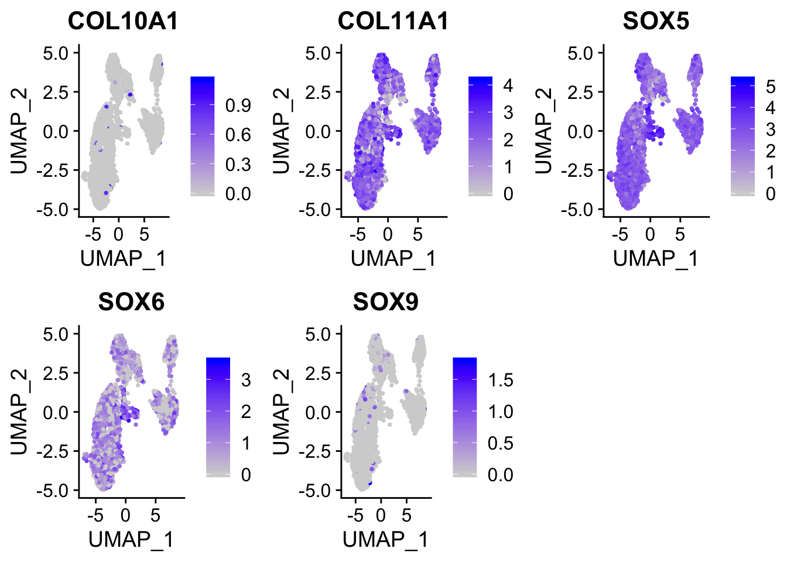
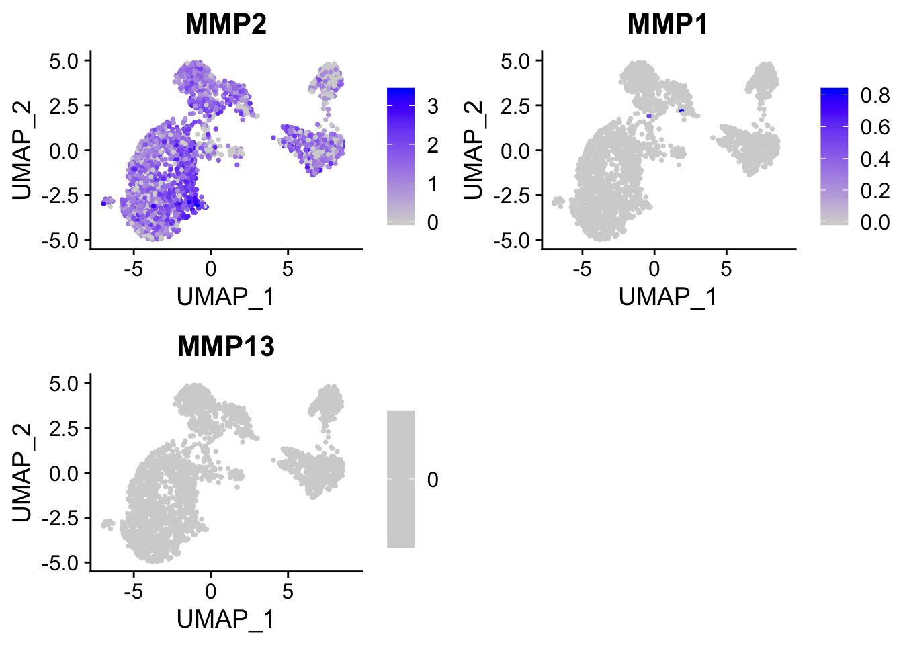
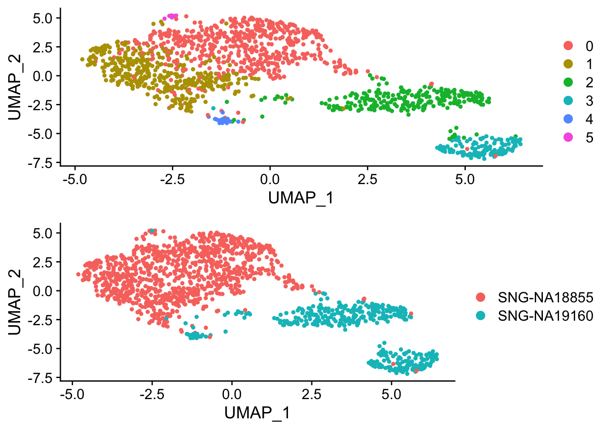

ANT1/ANT2_Pilot
Anthony Hung
2019-12-02
Last updated: 2019-12-10
Checks: 7 0
Knit directory: OAStrain/
This reproducible R Markdown analysis was created with workflowr (version 1.5.0). The Checks tab describes the reproducibility checks that were applied when the results were created. The Past versions tab lists the development history.
Great! Since the R Markdown file has been committed to the Git repository, you know the exact version of the code that produced these results.
Great job! The global environment was empty. Objects defined in the global environment can affect the analysis in your R Markdown file in unknown ways. For reproduciblity it’s best to always run the code in an empty environment.
The command set.seed(20191127) was run prior to running the code in the R Markdown file. Setting a seed ensures that any results that rely on randomness, e.g. subsampling or permutations, are reproducible.
Great job! Recording the operating system, R version, and package versions is critical for reproducibility.
Nice! There were no cached chunks for this analysis, so you can be confident that you successfully produced the results during this run.
Great job! Using relative paths to the files within your workflowr project makes it easier to run your code on other machines.
Great! You are using Git for version control. Tracking code development and connecting the code version to the results is critical for reproducibility. The version displayed above was the version of the Git repository at the time these results were generated.
Note that you need to be careful to ensure that all relevant files for the analysis have been committed to Git prior to generating the results (you can use wflow_publish or wflow_git_commit). workflowr only checks the R Markdown file, but you know if there are other scripts or data files that it depends on. Below is the status of the Git repository when the results were generated:
Ignored files:
Ignored: .Rhistory
Ignored: .Rproj.user/
Note that any generated files, e.g. HTML, png, CSS, etc., are not included in this status report because it is ok for generated content to have uncommitted changes.
These are the previous versions of the R Markdown and HTML files. If you’ve configured a remote Git repository (see ?wflow_git_remote), click on the hyperlinks in the table below to view them.
| File | Version | Author | Date | Message |
|---|---|---|---|---|
| Rmd | e2ea662 | Anthony Hung | 2019-12-10 | Lower stringency of QC for ANT1 |
| html | e2ea662 | Anthony Hung | 2019-12-10 | Lower stringency of QC for ANT1 |
| Rmd | df3d36c | Anthony Hung | 2019-12-10 | Add Seurat analysis |
Analysis of processed sc pilot data ANT1/ANT2
ANT1_ANT2 contain multiplexed samples from replicate of the pilot. Equal numbers of cells from 18855 (OA strained), 19160 (unstrained), and 18856 (unstrained) were pooled into one collection and sequenced using the 10x chromium technology.
ANT1: (19160 unstrained; 18856 unstrained; 18855 strained)
ANT2: (19160 strained; 18856 strained; 18855 unstrained)
Raw FASTQ files were processed through Kenneth Barr’s pipeline, which aligns reads to hg38 using STAR solo and runs demuxlet on the output.
Analysis using emptyDrops adapted from: http://research.fhcrc.org/content/dam/stripe/sun/software/scRNAseq/scRNAseq.html#312_identify_low_quallity_cells
Load libraries
library(data.table)
library(tidyverse)── Attaching packages ─────────────────────────────────────────────────────────────────────────────────────────── tidyverse 1.3.0 ──✓ ggplot2 3.2.1 ✓ purrr 0.3.3
✓ tibble 2.1.3 ✓ dplyr 0.8.3
✓ tidyr 1.0.0 ✓ stringr 1.4.0
✓ readr 1.3.1 ✓ forcats 0.4.0── Conflicts ────────────────────────────────────────────────────────────────────────────────────────────── tidyverse_conflicts() ──
x dplyr::between() masks data.table::between()
x dplyr::filter() masks stats::filter()
x dplyr::first() masks data.table::first()
x dplyr::lag() masks stats::lag()
x dplyr::last() masks data.table::last()
x purrr::transpose() masks data.table::transpose()library(dplyr)
library(stringr)
library(readr)
library(Matrix)
Attaching package: 'Matrix'The following objects are masked from 'package:tidyr':
expand, pack, unpacklibrary(biomaRt)
library(Seurat)Load in data
## link to directories containing data files (count matrices)
proj_dir <- "~/Desktop/scPilot/"
ANT1_dir <- paste0(proj_dir, "YG-AH-2S-ANT-1_S1_L008/")
ANT2_dir <- paste0(proj_dir, "YG-AH-2S-ANT-2_S2_L008/")
#read in data
#ANT1
demuxlet1 <- fread(paste0(ANT1_dir, "demuxlet.best", sep = ""))
count_data1 <- readMM(paste0(ANT1_dir, "Gene/filtered/matrix.mtx"))
genes1 <- read_tsv(paste0(ANT1_dir, "Gene/filtered/genes.tsv"), col_names = F)Parsed with column specification:
cols(
X1 = col_character(),
X2 = col_character()
)barcodes1 <- as.data.frame(read_tsv(paste0(ANT1_dir, "Gene/filtered/barcodes.tsv"), col_names = F))Parsed with column specification:
cols(
X1 = col_character()
)#ANT2
demuxlet2 <- fread(paste0(ANT2_dir, "demuxlet.best", sep = ""))
count_data2 <- readMM(paste0(ANT2_dir, "Gene/filtered/matrix.mtx"))
genes2 <- read_tsv(paste0(ANT2_dir, "Gene/filtered/genes.tsv"), col_names = F)Parsed with column specification:
cols(
X1 = col_character(),
X2 = col_character()
)barcodes2 <- as.data.frame(read_tsv(paste0(ANT2_dir, "Gene/filtered/barcodes.tsv"), col_names = F))Parsed with column specification:
cols(
X1 = col_character()
)Based on the demuxlet output, assign label for barcodes based on “BEST” output and filter for “SNG-” barcodes
#returns a dataframe with two columns, one corresponding to the barcodes and one corresponding to the label given by demuxlet
return_singlet_label <- function(barcodes, demuxlet.out){
labels <- demuxlet.out$BEST[match(unlist(barcodes), demuxlet.out$BARCODE)]
return(cbind(barcodes, labels))
}
barcodes1_labeled <- return_singlet_label(barcodes1, demuxlet1)
barcodes2_labeled <- return_singlet_label(barcodes2, demuxlet2)
#table of singlets/multiplets in the filtered data based on demuxlet
table(barcodes1_labeled$labels)
DBL-NA18855-NA18856-0.500 DBL-NA19160-NA18855-0.500 DBL-NA19160-NA18856-0.500
13 6 7
SNG-NA18855 SNG-NA18856 SNG-NA19160
411 452 260 table(barcodes2_labeled$labels)
DBL-NA18855-NA18856-0.500 DBL-NA18855-NA19160-0.500 DBL-NA18856-NA18855-0.500
20 2719 4
DBL-NA19160-NA18855-0.500 DBL-NA19160-NA18856-0.500 SNG-NA18855
5650 22 4990
SNG-NA19160
1506 ## filter for droplets that are singlets
#ANT1
demuxlet_single1 <- demuxlet1 %>%
dplyr::filter(grepl("SNG-", BEST))
singlets_index1 <- unlist(lapply(barcodes1_labeled$X1,"%in%", table = demuxlet_single1$BARCODE), use.names = F) #get index of barcodes that are singlets
barcodes_singlets1 <- barcodes1_labeled[singlets_index1,] #use index to subset matrix + barcode names
count_data_singlets1 <- count_data1[,singlets_index1]
#ANT2
demuxlet_single2 <- demuxlet2 %>%
dplyr::filter(grepl("SNG-", BEST))
singlets_index2 <- unlist(lapply(barcodes2_labeled$X1,"%in%", table = demuxlet_single2$BARCODE), use.names = F) #get index of barcodes that are singlets
barcodes_singlets2 <- barcodes2_labeled[singlets_index2,] #use index to subset matrix + barcode names
count_data_singlets2 <- count_data2[,singlets_index2]Create Seurat object for each dataset (for singlet barcodes) and add metadata in the form of singlet identity for each barcode. Rest of analysis adapted from: https://satijalab.org/seurat/v3.0/pbmc3k_tutorial.html
rownames(count_data_singlets1) <- genes1$X2
colnames(count_data_singlets1) <- barcodes_singlets1$X1
ANT1_seurat <- CreateSeuratObject(counts = count_data_singlets1, project = "ANT1") %>%
AddMetaData(barcodes_singlets1$labels, col.name = "labels")Warning: Non-unique features (rownames) present in the input matrix, making
uniquerownames(count_data_singlets2) <- genes2$X2
colnames(count_data_singlets2) <- barcodes_singlets2$X1
ANT2_seurat <- CreateSeuratObject(counts = count_data_singlets2, project = "ANT2") %>%
AddMetaData(barcodes_singlets2$labels, col.name = "labels")Warning: Non-unique features (rownames) present in the input matrix, making
uniqueNow we can perform some QC on cells in Seurat
ANT1_seurat[["percent.mt"]] <- PercentageFeatureSet(ANT1_seurat, pattern = "^MT-")
ANT2_seurat[["percent.mt"]] <- PercentageFeatureSet(ANT2_seurat, pattern = "^MT-")
# Visualize QC metrics as a violin plot
VlnPlot(ANT1_seurat, features = c("nFeature_RNA", "nCount_RNA", "percent.mt"), ncol = 3)
| Version | Author | Date |
|---|---|---|
| e2ea662 | Anthony Hung | 2019-12-10 |
VlnPlot(ANT2_seurat, features = c("nFeature_RNA", "nCount_RNA", "percent.mt"), ncol = 3)
| Version | Author | Date |
|---|---|---|
| e2ea662 | Anthony Hung | 2019-12-10 |
# FeatureScatter is typically used to visualize feature-feature relationships, but can be used
# for anything calculated by the object, i.e. columns in object metadata, PC scores etc.
plot1 <- FeatureScatter(ANT1_seurat, feature1 = "nCount_RNA", feature2 = "percent.mt")
plot2 <- FeatureScatter(ANT1_seurat, feature1 = "nCount_RNA", feature2 = "nFeature_RNA")
CombinePlots(plots = list(plot1, plot2))
| Version | Author | Date |
|---|---|---|
| e2ea662 | Anthony Hung | 2019-12-10 |
plot1 <- FeatureScatter(ANT2_seurat, feature1 = "nCount_RNA", feature2 = "percent.mt")
plot2 <- FeatureScatter(ANT2_seurat, feature1 = "nCount_RNA", feature2 = "nFeature_RNA")
CombinePlots(plots = list(plot1, plot2))
| Version | Author | Date |
|---|---|---|
| e2ea662 | Anthony Hung | 2019-12-10 |
#Filter barcodes based on nFeatures and %MT (lowered stringency for the ANT1 in order to have cells for downstream analysis; will try using SoupX to hopefully reduce nFeatures in cells)
ANT1_seurat <- subset(ANT1_seurat, subset = nFeature_RNA > 200 & percent.mt < 5)
ANT2_seurat <- subset(ANT2_seurat, subset = nFeature_RNA > 200 & nFeature_RNA < 2500 & percent.mt < 5)Normalizing Data
ANT1_seurat <- NormalizeData(ANT1_seurat, normalization.method = "LogNormalize", scale.factor = 10000)
ANT2_seurat <- NormalizeData(ANT2_seurat, normalization.method = "LogNormalize", scale.factor = 10000)Feature selection
ANT1_seurat <- FindVariableFeatures(ANT1_seurat, selection.method = "vst", nfeatures = 2000)
ANT2_seurat <- FindVariableFeatures(ANT2_seurat, selection.method = "vst", nfeatures = 2000)
plot_variable_features <- function(seurat.obj){
# Identify the 10 most highly variable genes
top10 <- head(VariableFeatures(seurat.obj), 10)
# plot variable features with and without labels
plot1 <- VariableFeaturePlot(seurat.obj) +
ggtitle(paste0(unname(seurat.obj$orig.ident[1]))) +
theme(legend.position="bottom")
plot2 <- LabelPoints(plot = plot1, points = top10, repel = TRUE) +
ggtitle(paste0(unname(seurat.obj$orig.ident[1]))) +
theme(legend.position="bottom")
return(CombinePlots(plots = list(plot1, plot2)))
}
plot_variable_features(ANT1_seurat)Warning: Using `as.character()` on a quosure is deprecated as of rlang 0.3.0.
Please use `as_label()` or `as_name()` instead.
This warning is displayed once per session.When using repel, set xnudge and ynudge to 0 for optimal resultsWarning: Transformation introduced infinite values in continuous x-axisWarning: Transformation introduced infinite values in continuous x-axis
| Version | Author | Date |
|---|---|---|
| e2ea662 | Anthony Hung | 2019-12-10 |
plot_variable_features(ANT2_seurat)When using repel, set xnudge and ynudge to 0 for optimal resultsWarning: Transformation introduced infinite values in continuous x-axis
Warning: Transformation introduced infinite values in continuous x-axis
| Version | Author | Date |
|---|---|---|
| e2ea662 | Anthony Hung | 2019-12-10 |
Scaling Data
scale_data <- function(seurat.obj){
all.genes <- rownames(seurat.obj)
return(ScaleData(seurat.obj, features = all.genes))
}
ANT1_seurat <- scale_data(ANT1_seurat)Centering and scaling data matrixANT2_seurat <- scale_data(ANT2_seurat)Centering and scaling data matrixDimensionality Reduction
Using the highly variable features selected above, perform PCA
ANT1_seurat <- RunPCA(ANT1_seurat, features = VariableFeatures(object = ANT1_seurat))PC_ 1
Positive: IFITM3, CRISPLD2, TMEM141, DCN, SAA1, PDPN, PRLR, OTULINL, PTGDS, SCUBE2
CDKN1C, FKBP5, DPP7, SPON2, PLIN2, TSPO, FAM89A, SERPINF1, MMP23B, LUM
IQGAP2, NPC2, GGT5, PNMT, TGFBI, ADAMTS2, B2M, TXNDC16, COPZ2, GYPC
Negative: TIMP3, INHBA, RAI14, CCND2, TPM1, VIM, PMEPA1, FSCN1, LZTS1, RDH10
C12orf75, SOX4, CDKN2B, LMO7, MAP3K7CL, SPINT2, CPE, TCAF1, PDLIM3, AQP1
TUBA1A, ENTPD4, JPT1, SH3BGRL3, NUAK1, FRMD6, PLEC, ADAM10, PAG1, RAB3B
PC_ 2
Positive: MEST, PLAC9, MDK, LIX1, SPON1, FLT1, PCDH10, OGN, PITX1, MFAP4
NRP2, TSPAN15, LMO4, CDH11, PLS3, PDZRN3, TNNT2, FST, ARL4A, RSPO2
COL15A1, ITGA11, PRSS35, UGP2, HOPX, TMEM59, STARD4, KCTD12, RIMS2, SLC40A1
Negative: TRIB3, FTH1, DDIT3, SLC7A11, ZFAS1, SQSTM1, HSPA9, TXNRD1, MGST1, FAM129A
PTGR1, MT1E, PCK2, SLFN5, NQO1, TCEA1, FADS3, GCLM, NFIL3, KCNG1
SLC12A8, PSAT1, GPR1, SLC3A2, TALDO1, UCHL1, GDF15, GARS, ASNS, BTG1
PC_ 3
Positive: CHCHD2, RPS4X, RPL22L1, PRDX4, TXNRD2, PDGFRL, NREP, HLA-A, CADM1, COL6A3
CRABP2, B2M, ICAM3, CTSF, HLA-B, HSD17B2, CALM2, ANOS1, P4HA2, IDH1
MDK, PELO, TYMS, EPB41L4A-AS1, CEMIP, S100A4, MAD2L1, PLS3, SNHG8, FRMD4A
Negative: SLC7A8, TMEM88, SORBS2, SPON2, RPS4Y1, EIF1AY, CKB, SMOC2, TSPO, SLC16A3
SLITRK4, ALCAM, ADAMTS2, PLXDC2, PLTP, NR2F1, F2R, FMO5, PRDX6, GREM1
DPP7, GGT5, PMP22, COBLL1, GPC3, APOD, COL11A1, RERE, C3orf70, ATRNL1
PC_ 4
Positive: KRT8, IL6ST, LTBP2, TIMP1, KRT18, PFKP, EGFLAM, MT2A, VCL, MYL10
ITGA1, COL6A3, NR2F1, PDGFRA, UBASH3B, TGFBR1, SLC22A3, PLAGL1, MYADM, CDK1
FGF1, CDH11, LRRC32, CENPM, RAI14, TUBA1B, CTPS1, MYL9, EGR2, UNC5B
Negative: PLXDC1, MFAP5, MAF, AL356056.1, ITM2B, NKAIN4, ELAVL2, NRG1, ODAPH, CTSV
ANGPTL7, HIST1H2AC, PROCR, DPP10-AS1, RCAN2, HIST1H1C, CRYGS, DHRS2, DPP10, SPINT1
SMOC2, SPINT2, KCNN2, TNNC1, DNAJC15, DYNC1I1, CDKN2A, TMEM59, COBLL1, HTRA1
PC_ 5
Positive: COL1A2, FN1, COL6A2, LTBP1, KDELR3, WNT2, FBLN2, LGALS1, COL6A1, EGFL6
TIMP1, VCAN, CXCL14, PTGER2, ALDH1L2, COPZ2, LUM, NR2F1, CLEC3A, RPRML
COMP, RAMP1, PCOLCE, COL11A1, LOX, MFAP4, FST, THBS2, HGF, C1S
Negative: EMP2, HSP90AA1, PLA2G16, CENPM, HMMR, TYMS, MGARP, CDK1, PBK, SLC29A1
SHCBP1, GADD45A, SPC25, PCLAF, LEFTY2, UBE2C, FOXM1, GINS2, HMGB2, RRM2
CENPW, JUN, NUSAP1, CLU, COL4A4, RGS4, NCAPG, ODC1, PTTG1, COL8A1 ANT2_seurat <- RunPCA(ANT2_seurat, features = VariableFeatures(object = ANT2_seurat))PC_ 1
Positive: SPON2, TSPO, RPS4Y1, FTH1, FTL, DPP7, PLIN2, PTGDS, LUM, FDPS
PRLR, MGST1, MGST3, HSPB6, PDPN, NUPR1, DUSP23, BRI3, DBI, CDKN1C
SOD3, EBPL, RPS27, TKT, APOE, IGFL3, DPYSL2, GYPC, RAMP1, S100A6
Negative: CHCHD2, TPM1, ACTA2, VIM, TAGLN, TPM2, RPS4X, IGFBP7, SPINT2, LGALS1
PLS3, C12orf75, CALM2, TIMP3, ITGA11, COL6A3, GLIPR1, CADM1, PLAC9, FILIP1L
PRDX4, SERPINE2, MDK, NREP, OGN, TMSB4X, INHBA, IGFBP5, S100A16, IGFL2
PC_ 2
Positive: COL5A2, MFAP4, MDK, VCAN, SLC40A1, COL1A2, B2M, SERPINE2, RPS4X, PLOD2
MATN2, IL6ST, FIBIN, ENPP1, COL15A1, COL6A1, PLAGL1, MEST, CDH11, FBLN5
SERPINF1, COPZ2, TMEM59, SPON1, AMMECR1, ITGA11, CRISPLD2, TGFBI, CALM2, COL11A1
Negative: S100A11, MT2A, AREG, IL1RL1, GDF15, FBXO32, KRT18, ANKRD1, S100A10, PHLDA2
CDKN2A, SH3BGRL3, VIM, GADD45A, CDKN1A, AC097478.1, RPS4Y1, MT1E, UCHL1, HSP90AA1
MAP3K7CL, DDIT3, DDX20, TSPO, TPM2, TUBA1A, TAGLN, IGFBP2, TPM1, HERC5
PC_ 3
Positive: SH3BP5-AS1, ATAD2B, GK, OSGIN1, FRAS1, B3GNT5, HMOX1, GRIA3, BAHD1, CHKA
FNIP2, ZNF699, LRSAM1, USP49, GTPBP2, CLCN6, SCN8A, AL135999.1, AKNA, PDP1
HKR1, FAAH, KANSL3, NRF1, GREM1, TMEM154, GPATCH2L, ERN1, TACC3, HEMK1
Negative: RPS27, FTL, HSPB1, RPS4X, LUM, TPM2, S100A11, MDK, CALM2, TXN
B2M, TIMP1, DCN, PRDX4, IFITM3, PTGDS, SERPINE2, ACTA2, NPC2, TMSB4X
S100A10, TAGLN, SAA1, SPON2, FTH1, TSPO, LGALS1, OLFML3, PDPN, EIF4EBP1
PC_ 4
Positive: COL6A1, SERPINF1, COL14A1, EGFL6, DLK1, COL6A2, PROK1, COMP, FGF7, HLA-C
LGALS1, TIMP1, NR2F1, CXCL14, ANKRD28, MGP, TGFBI, GYPC, DCN, FN1
COL6A3, PDGFRA, MFAP4, MYD88, S100A4, C1R, ANGPTL4, B2M, PODN, IFITM3
Negative: PLAC9, PROCR, IGFBP7, SMOC2, ADAM28, ODAPH, GPC3, RGS4, SLIT3, TMEM88
AC078850.1, OGFRL1, MFAP5, PLA2G16, CDC42BPA, AL356056.1, ZNF106, COL4A4, C11orf80, ALCAM
GPNMB, SELENOP, KCNN2, CLU, EMP2, HAPLN4, ATRNL1, KTN1, DIP2C, TMEM176A
PC_ 5
Positive: SAT1, SAA1, SBF2-AS1, OTULINL, IGF2.1, RBP1, B2M, SLC40A1, IL1RL1, SYNPO2
CRISPLD2, SLC4A8, PNMT, HAND2-AS1, Z93930.2, CSKMT, FILNC1, PKDCC, MDK, BOC
RSPO2, RIMS2, DPP4, LINC02001, MME, TMEM88, PIM3, KCNK12, F3, TGFBR1
Negative: FN1, RAMP1, MMP2, VIM, SPOCK1, FDPS, ACTG2, TIMP1, SOX4, IGFBP7
TAGLN, DKK2, COMP, TPM2, TMSB4X, RCN3, WFDC1, HTRA1, THBS2, TSPO
SH3BGRL3, FDFT1, STMN1, MARCKSL1, TPM1, KCTD12, S100A4, COL1A2, CDKN2A, CXCL14 # Examine and visualize PCA results a few different ways
print(ANT2_seurat[["pca"]], dims = 1:5, nfeatures = 5)PC_ 1
Positive: SPON2, TSPO, RPS4Y1, FTH1, FTL
Negative: CHCHD2, TPM1, ACTA2, VIM, TAGLN
PC_ 2
Positive: COL5A2, MFAP4, MDK, VCAN, SLC40A1
Negative: S100A11, MT2A, AREG, IL1RL1, GDF15
PC_ 3
Positive: SH3BP5-AS1, ATAD2B, GK, OSGIN1, FRAS1
Negative: RPS27, FTL, HSPB1, RPS4X, LUM
PC_ 4
Positive: COL6A1, SERPINF1, COL14A1, EGFL6, DLK1
Negative: PLAC9, PROCR, IGFBP7, SMOC2, ADAM28
PC_ 5
Positive: SAT1, SAA1, SBF2-AS1, OTULINL, IGF2.1
Negative: FN1, RAMP1, MMP2, VIM, SPOCK1 VizDimLoadings(ANT1_seurat, dims = 1:2, reduction = "pca")
| Version | Author | Date |
|---|---|---|
| e2ea662 | Anthony Hung | 2019-12-10 |
DimPlot(ANT1_seurat, reduction = "pca", group.by = "labels")
| Version | Author | Date |
|---|---|---|
| e2ea662 | Anthony Hung | 2019-12-10 |
# Get the total variance:
pca <- ANT1_seurat[["pca"]]
mat <- Seurat::GetAssayData(ANT1_seurat, assay = "RNA", slot = "scale.data")
total_variance <- sum(matrixStats::rowVars(mat))
eigValues <- (pca@stdev)^2 ## EigenValues
varExplained <- eigValues / total_variance
head(varExplained) #var explained by first 10 PCs[1] 0.007276886 0.004214385 0.002795383 0.002015915 0.001851249 0.001703016DimHeatmap(ANT1_seurat, dims = 1:15, cells = 500, balanced = TRUE)
| Version | Author | Date |
|---|---|---|
| e2ea662 | Anthony Hung | 2019-12-10 |
ElbowPlot(ANT1_seurat, ndims = 30) #22 PCs?
| Version | Author | Date |
|---|---|---|
| e2ea662 | Anthony Hung | 2019-12-10 |
# Examine and visualize PCA results a few different ways
print(ANT2_seurat[["pca"]], dims = 1:5, nfeatures = 5)PC_ 1
Positive: SPON2, TSPO, RPS4Y1, FTH1, FTL
Negative: CHCHD2, TPM1, ACTA2, VIM, TAGLN
PC_ 2
Positive: COL5A2, MFAP4, MDK, VCAN, SLC40A1
Negative: S100A11, MT2A, AREG, IL1RL1, GDF15
PC_ 3
Positive: SH3BP5-AS1, ATAD2B, GK, OSGIN1, FRAS1
Negative: RPS27, FTL, HSPB1, RPS4X, LUM
PC_ 4
Positive: COL6A1, SERPINF1, COL14A1, EGFL6, DLK1
Negative: PLAC9, PROCR, IGFBP7, SMOC2, ADAM28
PC_ 5
Positive: SAT1, SAA1, SBF2-AS1, OTULINL, IGF2.1
Negative: FN1, RAMP1, MMP2, VIM, SPOCK1 VizDimLoadings(ANT2_seurat, dims = 1:2, reduction = "pca")
DimPlot(ANT2_seurat, reduction = "pca", group.by = "labels")
# Get the total variance:
pca <- ANT2_seurat[["pca"]]
mat <- Seurat::GetAssayData(ANT2_seurat, assay = "RNA", slot = "scale.data")
total_variance <- sum(matrixStats::rowVars(mat))
eigValues <- (pca@stdev)^2 ## EigenValues
varExplained <- eigValues / total_variance
head(varExplained) #var explained by first 10 PCs[1] 0.0026737521 0.0015867984 0.0013628098 0.0011624101 0.0010868393
[6] 0.0009956408DimHeatmap(ANT2_seurat, dims = 1:15, cells = 500, balanced = TRUE)
ElbowPlot(ANT2_seurat, ndims = 30) #20 PCs?
Clustering
num_PCs <- 22
ANT1_seurat <- FindNeighbors(ANT1_seurat, dims = 1:num_PCs)Computing nearest neighbor graphComputing SNNANT1_seurat <- FindClusters(ANT1_seurat, resolution = 0.5)Modularity Optimizer version 1.3.0 by Ludo Waltman and Nees Jan van Eck
Number of nodes: 688
Number of edges: 25494
Running Louvain algorithm...
Maximum modularity in 10 random starts: 0.8215
Number of communities: 4
Elapsed time: 0 seconds#Run UMAP
ANT1_seurat <- RunUMAP(ANT1_seurat, dims = 1:num_PCs)Warning: The default method for RunUMAP has changed from calling Python UMAP via reticulate to the R-native UWOT using the cosine metric
To use Python UMAP via reticulate, set umap.method to 'umap-learn' and metric to 'correlation'
This message will be shown once per session16:21:23 UMAP embedding parameters a = 0.9922 b = 1.11216:21:23 Read 688 rows and found 22 numeric columns16:21:23 Using Annoy for neighbor search, n_neighbors = 3016:21:23 Building Annoy index with metric = cosine, n_trees = 500% 10 20 30 40 50 60 70 80 90 100%[----|----|----|----|----|----|----|----|----|----|**************************************************|
16:21:23 Writing NN index file to temp file /var/folders/td/y4r5skr139d88lvmz1yy97440000gn/T//RtmpfInVhx/file684c58da6db
16:21:23 Searching Annoy index using 1 thread, search_k = 3000
16:21:23 Annoy recall = 100%
16:21:25 Commencing smooth kNN distance calibration using 1 thread
16:21:26 Initializing from normalized Laplacian + noise
16:21:26 Commencing optimization for 500 epochs, with 26736 positive edges
16:21:29 Optimization finishedDimPlot(ANT1_seurat, reduction = "umap")
| Version | Author | Date |
|---|---|---|
| e2ea662 | Anthony Hung | 2019-12-10 |
DimPlot(ANT1_seurat, reduction = "umap", group.by = "labels")
| Version | Author | Date |
|---|---|---|
| e2ea662 | Anthony Hung | 2019-12-10 |
saveRDS(ANT1_seurat, file = "output/ANT1_seurat.rds")
num_PCs <- 20
ANT2_seurat <- FindNeighbors(ANT2_seurat, dims = 1:num_PCs)Computing nearest neighbor graph
Computing SNNANT2_seurat <- FindClusters(ANT2_seurat, resolution = 0.5)Modularity Optimizer version 1.3.0 by Ludo Waltman and Nees Jan van Eck
Number of nodes: 579
Number of edges: 28421
Running Louvain algorithm...
Maximum modularity in 10 random starts: 0.6943
Number of communities: 3
Elapsed time: 0 seconds#Run UMAP
ANT2_seurat <- RunUMAP(ANT2_seurat, dims = 1:num_PCs)16:21:47 UMAP embedding parameters a = 0.9922 b = 1.112
16:21:47 Read 579 rows and found 20 numeric columns
16:21:47 Using Annoy for neighbor search, n_neighbors = 30
16:21:47 Building Annoy index with metric = cosine, n_trees = 50
0% 10 20 30 40 50 60 70 80 90 100%
[----|----|----|----|----|----|----|----|----|----|
**************************************************|
16:21:48 Writing NN index file to temp file /var/folders/td/y4r5skr139d88lvmz1yy97440000gn/T//RtmpfInVhx/file684c16c576b6
16:21:48 Searching Annoy index using 1 thread, search_k = 3000
16:21:48 Annoy recall = 100%
16:21:48 Commencing smooth kNN distance calibration using 1 thread
16:21:50 Initializing from normalized Laplacian + noise
16:21:50 Commencing optimization for 500 epochs, with 21870 positive edges
16:21:53 Optimization finishedDimPlot(ANT2_seurat, reduction = "umap")
DimPlot(ANT2_seurat, reduction = "umap", group.by = "labels")
saveRDS(ANT2_seurat, file = "output/ANT2_seurat.rds")
sessionInfo()R version 3.6.1 (2019-07-05)
Platform: x86_64-apple-darwin15.6.0 (64-bit)
Running under: macOS Mojave 10.14.6
Matrix products: default
BLAS: /Library/Frameworks/R.framework/Versions/3.6/Resources/lib/libRblas.0.dylib
LAPACK: /Library/Frameworks/R.framework/Versions/3.6/Resources/lib/libRlapack.dylib
locale:
[1] en_US.UTF-8/en_US.UTF-8/en_US.UTF-8/C/en_US.UTF-8/en_US.UTF-8
attached base packages:
[1] stats graphics grDevices utils datasets methods base
other attached packages:
[1] Seurat_3.1.1 biomaRt_2.40.5 Matrix_1.2-18 forcats_0.4.0
[5] stringr_1.4.0 dplyr_0.8.3 purrr_0.3.3 readr_1.3.1
[9] tidyr_1.0.0 tibble_2.1.3 ggplot2_3.2.1 tidyverse_1.3.0
[13] data.table_1.12.6
loaded via a namespace (and not attached):
[1] readxl_1.3.1 backports_1.1.5 workflowr_1.5.0
[4] sn_1.5-4 plyr_1.8.5 igraph_1.2.4.2
[7] lazyeval_0.2.2 splines_3.6.1 listenv_0.8.0
[10] TH.data_1.0-10 digest_0.6.23 htmltools_0.4.0
[13] gdata_2.18.0 fansi_0.4.0 magrittr_1.5
[16] memoise_1.1.0 cluster_2.1.0 ROCR_1.0-7
[19] globals_0.12.5 modelr_0.1.5 matrixStats_0.55.0
[22] RcppParallel_4.4.4 R.utils_2.9.2 sandwich_2.5-1
[25] prettyunits_1.0.2 colorspace_1.4-1 blob_1.2.0
[28] rvest_0.3.5 ggrepel_0.8.1 haven_2.2.0
[31] xfun_0.11 crayon_1.3.4 RCurl_1.95-4.12
[34] jsonlite_1.6 zeallot_0.1.0 survival_3.1-8
[37] zoo_1.8-6 ape_5.3 glue_1.3.1
[40] gtable_0.3.0 leiden_0.3.1 future.apply_1.3.0
[43] BiocGenerics_0.30.0 scales_1.1.0 mvtnorm_1.0-11
[46] DBI_1.0.0 bibtex_0.4.2 Rcpp_1.0.3
[49] plotrix_3.7-7 metap_1.2 viridisLite_0.3.0
[52] progress_1.2.2 reticulate_1.13 rsvd_1.0.2
[55] bit_1.1-14 SDMTools_1.1-221.2 tsne_0.1-3
[58] stats4_3.6.1 htmlwidgets_1.5.1 httr_1.4.1
[61] gplots_3.0.1.1 RColorBrewer_1.1-2 TFisher_0.2.0
[64] ica_1.0-2 farver_2.0.1 pkgconfig_2.0.3
[67] XML_3.98-1.20 R.methodsS3_1.7.1 uwot_0.1.5
[70] dbplyr_1.4.2 labeling_0.3 reshape2_1.4.3
[73] tidyselect_0.2.5 rlang_0.4.2 later_1.0.0
[76] AnnotationDbi_1.46.1 munsell_0.5.0 cellranger_1.1.0
[79] tools_3.6.1 cli_2.0.0 generics_0.0.2
[82] RSQLite_2.1.4 broom_0.5.2 ggridges_0.5.1
[85] evaluate_0.14 yaml_2.2.0 npsurv_0.4-0
[88] knitr_1.26 bit64_0.9-7 fs_1.3.1
[91] fitdistrplus_1.0-14 caTools_1.17.1.3 RANN_2.6.1
[94] pbapply_1.4-2 future_1.15.1 nlme_3.1-143
[97] whisker_0.4 R.oo_1.23.0 xml2_1.2.2
[100] compiler_3.6.1 rstudioapi_0.10 png_0.1-7
[103] plotly_4.9.1 lsei_1.2-0 reprex_0.3.0
[106] stringi_1.4.3 RSpectra_0.16-0 lattice_0.20-38
[109] multtest_2.40.0 vctrs_0.2.0 mutoss_0.1-12
[112] pillar_1.4.2 lifecycle_0.1.0 Rdpack_0.11-0
[115] lmtest_0.9-37 RcppAnnoy_0.0.14 cowplot_1.0.0
[118] bitops_1.0-6 irlba_2.3.3 gbRd_0.4-11
[121] httpuv_1.5.2 R6_2.4.1 promises_1.1.0
[124] gridExtra_2.3 KernSmooth_2.23-16 IRanges_2.18.3
[127] codetools_0.2-16 MASS_7.3-51.4 gtools_3.8.1
[130] assertthat_0.2.1 rprojroot_1.3-2 withr_2.1.2
[133] sctransform_0.2.0 mnormt_1.5-5 multcomp_1.4-11
[136] S4Vectors_0.22.1 parallel_3.6.1 hms_0.5.2
[139] grid_3.6.1 rmarkdown_1.18 Rtsne_0.15
[142] git2r_0.26.1 numDeriv_2016.8-1.1 Biobase_2.44.0
[145] lubridate_1.7.4